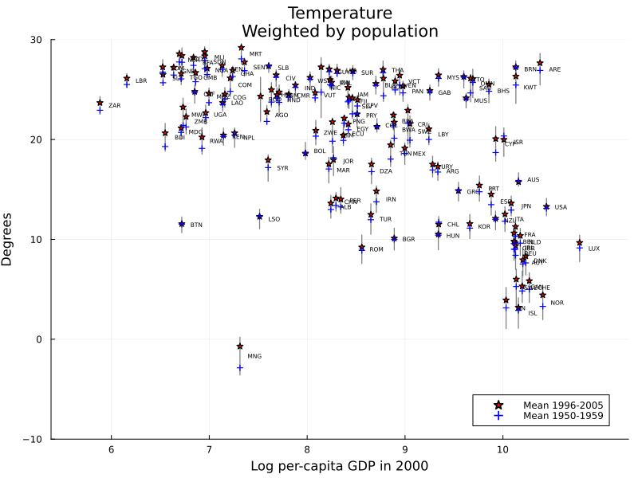

Functions for Figure 1.
This page contains the functions used to generate Figure 1 of Dell (2012). The function gen_vars_fig1! is specific to Figure 1 and is used inside figure1_data_cleaner. The two remaining functions are mainly used for saving and viewing the resulting graphs.
Graph 1: Temperature

Graph 2: Precipitation

Functions
DellReplicate.gen_vars_fig1! — Functiongen_vars_fig1!(df::DataFrame)Generates the necessary mean temperature and precipitation variables for the two graphs of Figure 1, given the climate panel data. Returns the modified version of input df.
DellReplicate.figure1_data_cleaner — Functionfigure1_data_cleaner()Loads the climate_panel_csv dataset and reproduces Dell's (2012) makefigure1.do commands. Returns a DataFrame object which can be used by figure1_visualise().
DellReplicate.figure1_visualise_graph1 — Functionfigure1_visualise_graph1(df_name::String)Plots Figure 1 from Dell (2012) by calling the data cleaning function figure1_data_cleaner with the climate_panel_csv.csv dataset. The figure is a combination of 128 line plots (one for each country) showing the temperature range and two scatter plots showing the mean temperature values for the periods 1950-1959 and 1996-2005.
DellReplicate.figure1_visualise_graph2 — Functionfigure1_visualise_graph2(df_name::String)Plots Figure 1 from Dell (2012) by calling the data cleaning function figure1_data_cleaner with the climate_panel_csv.csv dataset. The figure is a combination of 128 line plots (one for each country) showing the precipitation range and two scatter plots showing the mean precipitation values for the periods 1950-1959 and 1996-2005.